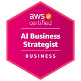

Consulting Services
I specialize in commercial real estate, C-PACE, and financial services marketing. My work runs from strategy through execution: sharper positioning, the right audiences, steady opportunities, and smarter systems.
C-PACE, Commercial Real Estate & Finance Marketing
Specialized marketing for C-PACE lenders, program administrators, brokers, consultants, and CRE and finance organizations.
- Market positioning and growth strategy
- Lender, developer, contractor, and property owner outreach
- Case-study and transaction marketing
- Complex financial messaging made clear for each audience
Marketing Strategy, Brand & Messaging
Senior-level guidance on what you do, why it matters, and how to say it.
- Marketing assessments and strategic roadmaps
- Go-to-market and campaign planning
- Brand positioning and value propositions
- Audience-specific messaging for technical or complex services
Targeted Lead Generation & Market Intelligence
Custom prospect research built around specific business-development goals, not generic purchased lists.
- Target account and decision-maker lists
- Developer, owner, lender, and contractor research
- Geographic and industry targeting
- Competitive and public-data research
AI Automation & Implementation
Using AI to improve communication, lead handling, research, and repetitive business processes.

AWS Certified AI Business Strategist · In Progress- AI receptionists and website chatbots
- Lead intake and qualification automation
- Marketing and CRM workflow automation
- AI-assisted research and prospecting systems
Content, Email, PR & Video
Strategic content that builds visibility and authority and supports business development.
- LinkedIn and executive thought leadership
- Articles, case studies, and content calendars
- Newsletters and targeted email campaigns
- Press releases and PR strategy
- Corporate and executive video
Website, Collateral & Marketing Technology
Helping organizations communicate their value, move visitors toward action, and choose tools that support it.
- Website audits, landing pages, and conversion paths
- SEO and Google Business Profile guidance
- Pitch decks, one-sheets, and offering memorandum design
- CRM and marketing-platform guidance (Salesforce, HubSpot, Constant Contact)
Fractional Marketing Leadership
Experienced marketing leadership without a full-time senior hire.
I can serve as an extension of your leadership team: developing strategy, directing vendors and specialists, improving marketing systems, and handling hands-on execution where it matters most.